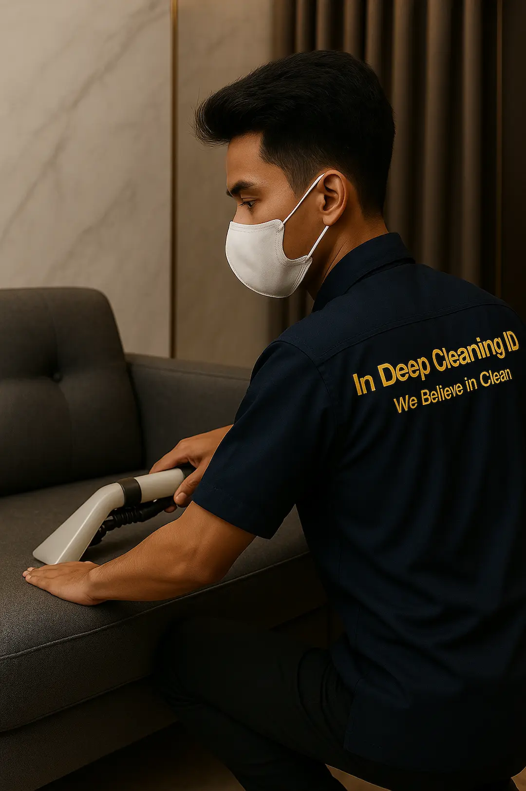

Jasa Cuci Soft Furniture Jabodetabek Terpercaya
Jaga Furnitur Anda Tetap Awet & Higienis.
Di tengah harga barang yang makin naik, menjaga apa yang sudah ada adalah kunci. Kami bantu perpanjang usia sofa dan kasur Anda agar tetap nyaman dan bebas tungau tanpa harus renovasi mahal.

Pilih Layanan untuk Mulai
Setiap layanan dikerjakan dengan metode QDWC dan dijamin hasil maksimal.
Cuci Kasur
Hilangkan tungau, bakteri, dan noda membandel dari kasur Anda. Tidur jadi lebih segar dan higienis.
Cuci Sofa
Sofa kembali segar tanpa noda dan debu. Menjaga estetika dan warna kain tetap prima.
Karpet & Gordyn
Pembersihan mendalam untuk karpet dan gorden Anda. Hilangkan debu dan bau apek secara tuntas.
Interior Mobil
Detailing interior mobil agar kinclong, bersih, dan segar. Kabin kembali nyaman untuk berkendara.
Baby Stuff
Pencucian aman dan higienis dengan bahan non-toxic. Kebersihan maksimal untuk buah hati Anda.
Sebelum Mulai, Tahap Penting
Jawaban atas pertanyaan yang sering ditanyakan pelanggan kami.
Ingin hasil pencucian jadi lebih maksimal?
Dapatkan estimasi harga gratis dan jadwalkan layanan Anda sekarang. Admin kami, MinDi Siap Membantu.